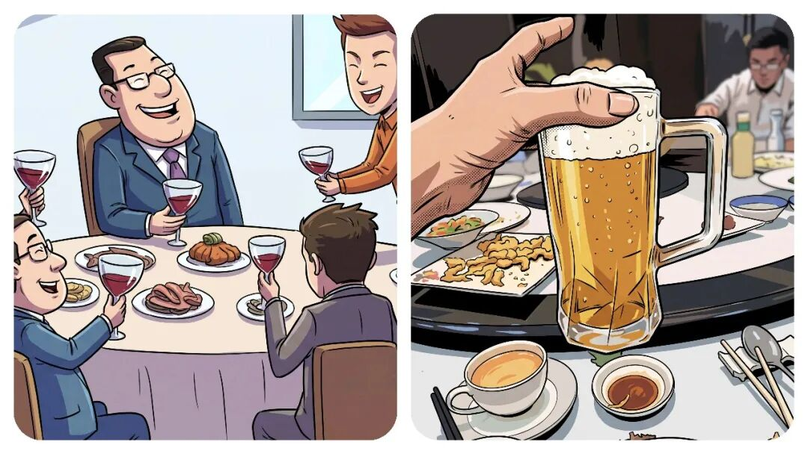
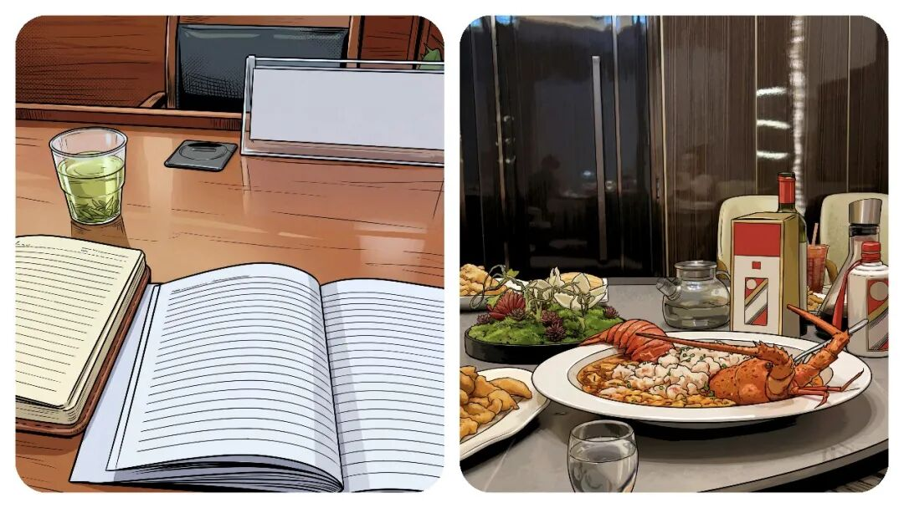
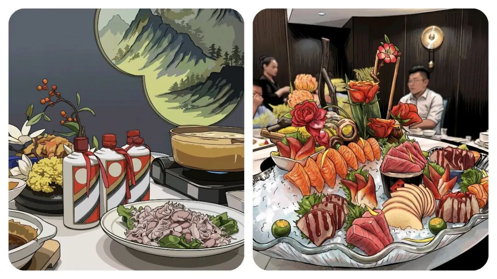
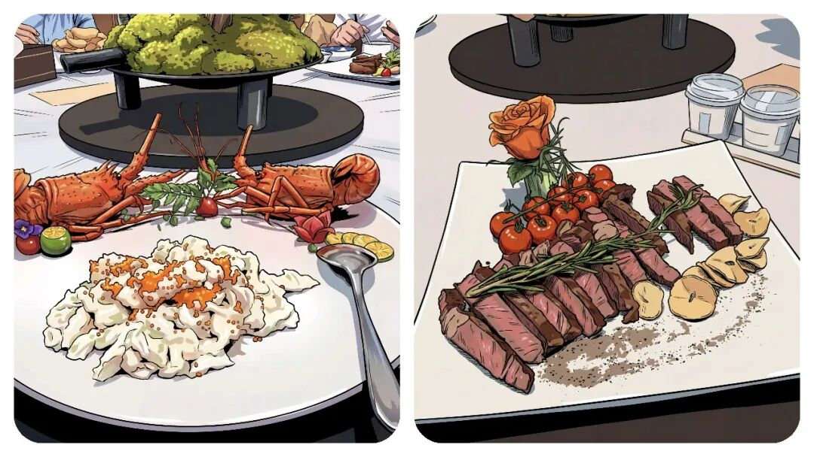
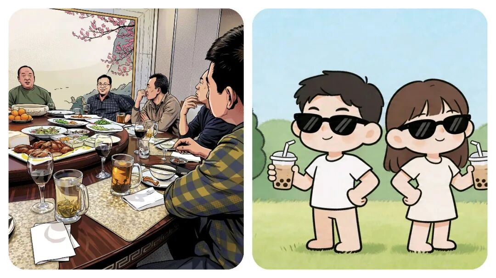

为什么体制内“饭局”不再受欢迎了？几年前靠“一顿饭”摆平一切，现在为什么不行了？
原创
点击关注👉🏻
点击关注👉🏻
田间烟火
在小说阅读器读本章
去阅读
在小说阅读器中沉浸阅读
点击上方
蓝字
关注我们
田间烟火🔥
大家好，我是【田间烟火🔥】～
今天我们来聊一个，以前经常出现了不良现象，现在为什么突然慢慢消失了？
体制内的饭局，以前几乎算是职场必修课。
新同事
入职
、
调动
、
节日聚餐
、
升职
，各种理由都能拉一桌人吃饭喝酒。
那时候不参加饭局，好像就是不会做人一样，不会敬酒更成了“
软肋
”，酒量不好直接影响竞争力，会被觉得你不懂人情世故。
这几年情况变了。
推饭聚会的人越来越多，饭局越来越有
“成本”
，带来的好处却越来越少。
很多人下班只想回家，没什么兴趣去陪笑脸听陈词滥调。

01
风险变高，违规吃喝监管趋严
以前吃饭就是社交，现在吃一次饭还要考虑一大堆风险，“
风腐同查同治
”已经不是口号了。
只要和
管理对象、工程老板、利益关联
人挂上钩，一顿饭就不再是普通饭，反而可能成了违规。
不少人觉得饭局里气氛热烈，实际上桌上藏着
利益关系、权钱交易，隐患特别多。
自八项规定落地之后，各地对违规吃喝查得越来越细。
只要饭局和工作有点关系，谁也不敢掉以轻心。
更麻烦的是，时不时能看到新闻里某干部饭局后被
查出资金、干部任用、工程项目
的问题，最后牵连越来越大。
一顿本来应该是
“联络感情”的饭
，连带能牵出大案。
吃饭本身还有不少风险。
酒驾、醉驾、酒后失言、冲突、意外
，几个词摆在那，如果真出事，没有人能替你承担责任。
过去同事要合群，领导要亲切，下属要懂事，饭桌上分工明确：
夹菜、敬酒、活跃气氛、递话、接梗。
吃一顿饭，有时候比一场会议更累，出了问题却没人兜底
。

02
厌恶戴面具的无效社交
其实大家不讨厌社交，更烦的是戴着面具的社交。
特别是中年干部们，白天单位事情已经耗光了精力，下班只
想安安静静陪家人、放松休息
。
再参加应酬，脸上还要带笑，
听话茬，劝酒敷衍，心情自然好不了。
见惯了这些套路的人也不愿意再多花时间。
90后、00后对体制内饭局更是不“感冒”。
他们更重视自己的私人时间，下班以后干什么是自由，不喜欢把宝贵的空闲时间拿去应付无效的应酬。
该交办的工作交办，
该配合的配合，但没有兴趣再额外参与累人的聚会
。
职场年轻一代更信奉
能力、规则、实际配合。
不信一次喝酒能建立长久关系，觉得关键还是要做事靠谱，关系才稳。

03
对人脉的认知发生改变
大家对人脉的看法也变了。
过去好像只要手机里存得多
领导号码，朋友圈里有老板合影
，饭桌上认识多少“
老板
”，就觉得这些是资源。
其实真的有用的关系，不靠酒精维系。
一起干
过苦活、互相补台、关键时刻
有人撑你，才算真正的人脉。
吃饭称兄道弟，过一天就各奔东西，不少时候不过是走个过程。
现在很多人开始看重工作上的
信任、靠谱，觉得能力和合作才是真正的朋友
。

04
饭局文化淡化是普遍趋势
有意思的是，这种饭局文化变化并不是体制内特有。
像那种高校里以前
学生、老师吃饭也很有讲究，博士毕业吃饭、导师调动吃
饭
、甚至年前聚餐都要安排好。
近年来学校也推行厉行节约，老师和学生越来越多选择简单聚合，不再为
“场面”
费心。
类似的，许多上市
公司、民营企业的部门聚餐传统
，也逐渐淡化。
大家更看重业务本身，关系建设转向
合作、平等
，而不是推杯换盏。
不过变化也不绝对。
有报道说金融、地产等行业，高层聚餐依然盛行。
有些老板依然喜欢通过饭局
谈项目、谈合作
。
场合不同，要求也不同
。
有企业还规定重要投标一定要请吃饭，核心岗位甚至按部就班安排酒局。
对于这些场合，有些老员工还是应付得来，不过新员工普遍不愿意配合。
有时并不因为酒量，而是觉得这些应酬没什么实质作用
。

05
能力和信任才是长久立足的根本
现在不一样啦，时代变了。
体制内、企业、学校、机关的聚餐都
越来越“务实
”。
大家对无效饭局兴趣不高，对风险饭局更加谨慎。
强调
能力、规则、合作，
取代了过去的酒桌人脉。
工作要做、身体要顾
，
希望不能寄托在酒杯里。
建立起
稳固的信任、靠谱的配合
，才比一顿饭更长久。
其实不少人也开始反思：
饭局真能帮你结识人脉、帮你升迁，还是只是让人习惯性地“刷脸”
？
现实证明，一个靠谱的人，在工作中提供
支持、补台、合作
，别人自然记住你。
即便不喝酒，有能力、会配合、能撑事儿，才是真正被需要的人。
吃饭称兄道弟，转身各奔东西
，这种表面形式已经被越来越多人看明白。
没必要参加无效的聚会，也不要把希望托付给一顿饭。
人脉不是喝出来的，
底气
和
信任
是做事做出来的。
对于这些变化，大家都已经在心里转过弯。
你觉得酒桌上的交情，能真正助力职场发展吗？
欢迎聊聊你的看法～
分享
收藏
点赞
在看